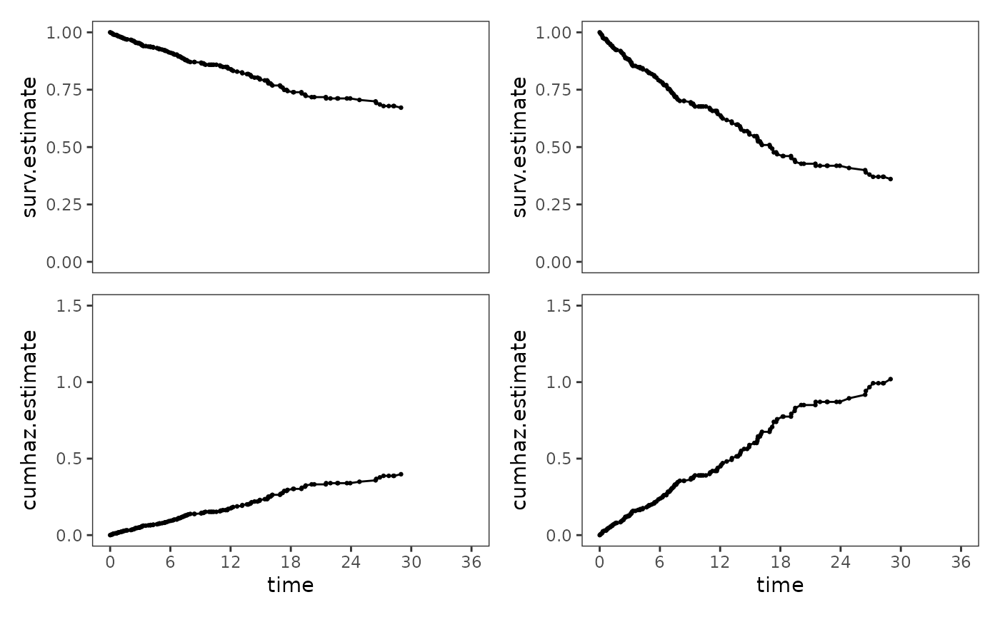

Chapter 14: Fitting the Cox regression model
Source:vignettes/articles/chapter-14.Rmd
chapter-14.Rmd
library(alda)
library(dplyr)
library(tidyr)
library(purrr)
library(ggplot2)
library(patchwork)
library(survival)
library(muhaz)
library(car)
library(broom)
library(modelsummary)
library(gt)14.1 Toward a statistical model for continuous-time hazard
In Chapter 14 Singer and Willett (2003) develop and explain the Cox regression model (often labelled the proportional hazards model) using data from Henning and Frueh (1996), who measured days to rearrest in a sample of 194 inmates recently released from a medium security prison. Inmates were followed for up to three years or until they were rearrested.
For this example we use the rearrest data set, a
person-level data frame with 194 rows and 7 columns:
-
id: Participant ID. -
days: Number of days to rearrest. -
months: Number of months to rearrest, on the scale of an “average” month (with 30.4375 days). -
censor: Censoring status. -
person_crime: Committed a person-related crime -
property_crime: Binary indicator for whether the inmate committed a property crime. -
age: Centred age at time of release.
rearrest
#> # A tibble: 194 × 7
#> id days months censor person_crime property_crime age
#> <fct> <dbl> <dbl> <dbl> <dbl> <dbl> <dbl>
#> 1 1 2 0.0657 0 1 1 -1.68
#> 2 2 4 0.131 0 0 1 -10.5
#> 3 3 7 0.230 0 1 1 -4.43
#> 4 4 9 0.296 0 0 1 -11.3
#> 5 5 9 0.296 0 1 1 -7.16
#> 6 6 10 0.329 0 1 0 -2.87
#> 7 7 15 0.493 0 0 1 -6.43
#> 8 8 19 0.624 1 1 1 22.5
#> 9 9 21 0.690 0 1 1 -12.5
#> 10 10 22 0.723 0 1 1 -9.41
#> # ℹ 184 more rowsTo inform specification of the Cox regression model we will fit in
subsequent sections, we begin with some basic exploration and
description of the rearrest data using the descriptive
methods introduced in Chapter 13. Following Singer and Willett (2003),
our research question centres on the effect of the
person_crime predictor.
Plots of within-group sample functions
Here we will plot within-group sample functions of survival,
cumulative hazard, and kernel-smoothed hazard estimates for the
person_crime predictor. Notice that former inmates who
committed a person-related crime are consistently at higher risk of
rearrest than those who committed other types of crime.
# Estimate survival and cumulative hazard functions ---------------------------
rearrest_survfit <- survfit(Surv(months, 1 - censor) ~ 1, data = rearrest)
person_crime_0_survfit <- update(rearrest_survfit, subset = person_crime == 0)
person_crime_1_survfit <- update(rearrest_survfit, subset = person_crime == 1)
person_crime_survfits <- list(
person_crime_0 = person_crime_0_survfit,
person_crime_1 = person_crime_1_survfit
)
person_crime_lifetables <- map(
person_crime_survfits,
\(.x) {
.x |>
survfit0() |>
tidy() |>
mutate(cumhaz.estimate = -log(estimate)) |>
select(time, surv.estimate = estimate, cumhaz.estimate)
}
)
# Estimate kernel-smoothed hazard functions -----------------------------------
person_crime_smoothhaz <- map2(
list(
person_crime_0 = filter(rearrest, person_crime == 0)$months,
person_crime_1 = filter(rearrest, person_crime == 1)$months
),
list(
1 - filter(rearrest, person_crime == 0)$censor,
1 - filter(rearrest, person_crime == 1)$censor
),
\(.time, .event) {
kernel_smoothed_hazard <- muhaz(
.time,
.event,
min.time = min(.time[1 - .event == 0]) + 8,
max.time = max(.time[1 - .event == 0]) - 8,
bw.grid = 8,
bw.method = "global",
b.cor = "none",
kern = "epanechnikov"
)
kernel_smoothed_hazard |>
tidy() |>
rename(smoothhaz.estimate = estimate)
}
)
# Join estimates --------------------------------------------------------------
person_crime_functions <- person_crime_lifetables |>
map2(
person_crime_smoothhaz,
\(.x, .y) {
.x |>
full_join(.y) |>
arrange(time) |>
rename(months = time)
}
) |>
list_rbind(names_to = "person_crime") |>
mutate(person_crime = person_crime == "person_crime_1")
# Plot ------------------------------------------------------------------------
person_crime_surv <- person_crime_functions |>
select(months, surv.estimate, person_crime) |>
na.omit() |>
ggplot(aes(x = months, y = surv.estimate, colour = person_crime)) +
geom_step() +
scale_colour_brewer(palette = "Dark2") +
coord_cartesian(xlim = c(0, 36), ylim = c(0, 1))
person_crime_cumhaz <- person_crime_functions |>
select(months, cumhaz.estimate, person_crime) |>
na.omit() |>
ggplot(aes(x = months, y = cumhaz.estimate, colour = person_crime)) +
geom_step() +
scale_colour_brewer(palette = "Dark2") +
coord_cartesian(xlim = c(0, 36), ylim = c(0, 1.5))
person_crime_smoothhaz <- person_crime_functions |>
select(months, smoothhaz.estimate, person_crime) |>
na.omit() |>
ggplot(aes(x = months, y = smoothhaz.estimate, colour = person_crime)) +
geom_line() +
scale_colour_brewer(palette = "Dark2") +
coord_cartesian(xlim = c(0, 36), ylim = c(0, .08))
# Figure 14.1, page 505:
person_crime_surv / person_crime_cumhaz / person_crime_smoothhaz +
plot_layout(guides = "collect", axes = "collect")
What kind of statistical model do these plots suggest?
In specifying a suitable statistical model to represent the relationship between the population continuous-time hazard function and predictors, Singer and Willett (2003) begin by developing a cumulative hazard formulation of the Cox regression model, which has two complications we must deal with.
First, the model must respect the semi-bounded nature of the cumulative hazard, precluding impossible values below the 0. This complication can be dealt with using a logarithmic transformation on the cumulative hazard function, yielding the unbounded the log cumulative hazard function.
person_crime_lifetable <- person_crime_lifetables |>
list_rbind(names_to = "person_crime") |>
mutate(
logcumhaz.estimate = log(cumhaz.estimate),
person_crime = person_crime == "person_crime_1"
) |>
rename(months = time)
# Figure 14.2, page 508 (top):
person_crime_lifetable |>
filter(!is.infinite(logcumhaz.estimate)) |>
ggplot(aes(x = months, y = logcumhaz.estimate, colour = person_crime)) +
geom_hline(yintercept = 0, alpha = .25) +
geom_step() +
scale_colour_brewer(palette = "Dark2") +
coord_cartesian(xlim = c(0, 36), ylim = c(-6, 1))Second, the model must describe the shape of the entire log cumulative hazard function over time. Similar to discrete time, this complication can be dealt with by expressing the entire log cumulative hazard function as the sum of a baseline function and a weighted linear combination of predictors; however, unlike the discrete-time hazard model, we do not specify its shape, only that it has some shape and is a continuous function.
Following the same logic when we developed discrete-time hazard
models in Chapter 11, we can express a Cox regression model for the
rearrest data as:
where represents the completely general baseline log cumulative hazard function.
This model can also be expressed in terms of (raw) cumulative hazard by antilogging both sides of the equation:
Note that that this transformation converts the vertical distances between the (log) cumulative hazard functions from a constant absolute amount, , to a constant relative amount, .
A hazard function representation for the Cox model
Thanks to mathematical identities, the Cox model takes on an identical form when expressed in terms of hazard directly, substituting the outcome (and baseline) hazard function, , for the outcome (and baseline) cumulative hazard function, :
Antilogging both sides, we can also write this model as:
These representations allow us to articulate the assumptions of the Cox model using the intuitively appealing metric of hazard, instead of cumulative hazard. Singer and Willett (2003) identify three assumptions highlighted in these representations that are inherent to basic Cox regression models:
- There is a postulated log hazard function for each value of the predictor (or for each combination of predictor levels for models with more than one predictor).
- The postulated log hazard functions have an identical shape for all predictor values. We do not place any constraints on the specification of that shape, and the function can take on any form necessary to adequately describe the distribution of event occurrence in the population.
- The postulated log hazard functions have an identical distance between them at every possible instant.
14.2 Fitting the Cox regression model to data
In Section 14.2 Singer and Willett (2003) discuss how the Cox regression model is fit to data using partial maximum likelihood estimation, which has three practical consequences for data analysis:
- The shape of the baseline hazard function is irrelevant: Partial maximum likelihood estimation invokes a conditioning argument that eliminates the baseline hazard function entirely from consideration. The consequence of this is that fitted models do not provide provide predicted values of hazard, and nonparametric strategies must be used to “recover” survivor and cumulative hazard functions.
- The precise event times are irrelevant: Only the rank order of event times matter. The consequence of this is that neither the exact timing of events nor their metric for clocking time influence model results, so long as the relative ranking of event times is preserved.
- Ties can create analytic difficulties: Each tied observation’s contribution to the partial likelihood must be evaluated, with the required number of additional calculations increasing as a function of the the number of people tied at any specific event time. The consequence of this is that ties can be computationally expensive, and a method for dealing with them must be selected before model fitting. Singer and Willett (2003) suggest using the exact method whenever computationally feasible, and Efron’s approximation whenever not. For data with many ties, discrete-time methods are likely more appropriate.
For mathematical details of partial maximum likelihood estimation, consult the textbook.
14.3 Interpreting the results of fitting the Cox regression model to data
In Section 14.3 Singer and Willett (2003) discuss how to interpret parameter estimates, evaluate goodness-of-fit, test statistical hypotheses, and summarize the effects of several predictors simultaneously using risk scores for the Cox regression model:
- Interpreting parameter estimates: Each regression coefficient describes the effect of a one-unit difference in the associated predictor on either log hazard (raw coefficients) or raw hazard (antilogged coefficients). Antilogged coefficients are hazard ratios that allow us to make comparative statements about hazard; because the Cox regression model does not estimate the baseline hazard function, we cannot make absolute statements. Similar to odds ratios, hazard ratios can be expressed as percentages, and the reference group for a hazard ratio can be swapped by taking its reciprocal.
- Evaluating goodness-of-fit: As usual, likelihood ratio tests can be used to compare the −2LL statistics between null or nested models, and AIC/BIC statistics between non-nested models (in addition to using a combination of logic, theory, and prior research).
- Testing statistical hypotheses: Statistical hypotheses about the effects of predictors can be tested by comparing −2LL statistics for nested models (recommended) or Wald tests (not recommended). Asymptotic confidence intervals can be constructed using asymptotic standard errors associated with Wald tests.
- Using risk scores: The simultaneous effects of several predictors can be summarized using risk scores, which are model-based predictions that compare each individual’s risk of event occurrence relative to that of a “baseline individual” who has value 0 for every predictor in the model. Individuals who face higher relative risk will have scores greater than 1, those who face lower relative risk will have scores less than 1, and those who face no higher or lesser relative risk will have scores of approximately 1.
Here we will fit four Cox regression models to the
rearrest data using the coxph() function from
the survival package: A model that includes
person_crime as a predictor (Model A), a model that
includes property_crime as a predictor (Model B), a model
that includes age as a predictor (Model C), and a model
that includes all three of these predictors (Model D).
# Fit models ------------------------------------------------------------------
rearrest_fit_A <- coxph(
Surv(months, 1 - censor) ~ person_crime, data = rearrest
)
rearrest_fit_B <- update(rearrest_fit_A, . ~ property_crime)
rearrest_fit_C <- update(rearrest_fit_A, . ~ age)
rearrest_fit_D <- update(rearrest_fit_A, . ~ person_crime + property_crime + age)
rearrest_fits <- list(
"Model A" = rearrest_fit_A,
"Model B" = rearrest_fit_B,
"Model C" = rearrest_fit_C,
"Model D" = rearrest_fit_D
)
# Test hypotheses -------------------------------------------------------------
rearrest_fits_htests <- list(LR = "LR", Wald = "Wald") |>
map(
\(.test) {
rearrest_fits |>
map(
\(.fit) {
.fit |>
Anova(type = 2, test.statistic = .test) |>
tidy() |>
filter(term != "NULL") |>
mutate(term = paste0(term, " = 0")) |>
select(term, statistic)
}
) |>
list_rbind(names_to = "model") |>
pivot_wider(names_from = model, values_from = statistic)
}
) |>
list_rbind()
# Make table ------------------------------------------------------------------
options(modelsummary_get = "all")
# Table 14.1, page 525:
rearrest_fits |>
# {modelsummary} doesn't have a built-in way to include raw and exponentiated
# coefficients in a table at the same time, so we will use the
# `modelsummary_list` approach to customize model output. See:
# https://modelsummary.com/vignettes/modelsummary_extension.html
map(
\(.fit) {
ms_list <- list(
tidy = rbind(
tidy(.fit),
mutate(
tidy(.fit, exponentiate = TRUE), term = paste0("exp(", term, ")")
)
),
glance = glance(.fit)
)
class(ms_list) <- "modelsummary_list"
ms_list
}
) |>
modelsummary(
fmt = 4,
coef_map = c(
"person_crime",
"property_crime",
"age",
"exp(person_crime)",
"exp(property_crime)",
"exp(age)"
),
gof_map = list(
list(
raw = "logLik",
clean = "-2LL",
fmt = \(.x) vec_fmt_number(
-2*as.numeric(.x), decimals = 2, sep_mark = ""
)
),
list(
raw = "statistic.log",
clean = "LR statistic",
fmt = fmt_decimal(2)
),
list(
raw = "p.value.log",
clean = "P",
fmt = fmt_decimal(pdigits = 4)
),
list(
raw = "AIC",
clean = "AIC",
fmt = fmt_decimal(2)
),
list(
raw = "BIC",
clean = "BIC",
fmt = fmt_decimal(2)
)
),
add_rows = rearrest_fits_htests,
output = "gt",
) |>
tab_row_group(label = "Wald Hypothesis Tests", rows = 21:23) |>
tab_row_group(label = "Likelihood-Ratio Hypothesis Tests", rows = 18:20) |>
tab_row_group(label = "Goodness-of-Fit", rows = 13:17) |>
tab_row_group(label = "Hazard Ratios", rows = 7:12) |>
tab_row_group(label = "Parameter Estimates", rows = 1:6)| Model A | Model B | Model C | Model D | |
|---|---|---|---|---|
| Parameter Estimates | ||||
| person_crime | 0.4787 | 0.5691 | ||
| (0.2025) | (0.2052) | |||
| property_crime | 1.1946 | 0.9358 | ||
| (0.3493) | (0.3509) | |||
| age | -0.0681 | -0.0667 | ||
| (0.0156) | (0.0168) | |||
| Hazard Ratios | ||||
| exp(person_crime) | 1.6140 | 1.7667 | ||
| (0.2025) | (0.2052) | |||
| exp(property_crime) | 3.3022 | 2.5492 | ||
| (0.3493) | (0.3509) | |||
| exp(age) | 0.9341 | 0.9355 | ||
| (0.0156) | (0.0168) | |||
| Goodness-of-Fit | ||||
| -2LL | 984.08 | 973.20 | 966.43 | 950.44 |
| LR statistic | 5.32 | 16.20 | 22.97 | 38.96 |
| P | 0.021 | 0.000 | 0.000 | 0.000 |
| AIC | 986.08 | 975.20 | 968.43 | 956.44 |
| BIC | 988.74 | 977.86 | 971.10 | 964.43 |
| Likelihood-Ratio Hypothesis Tests | ||||
| person_crime = 0 | 5.3237 | 7.2760 | ||
| property_crime = 0 | 16.2050 | 9.1493 | ||
| age = 0 | 22.9688 | 18.3234 | ||
| Wald Hypothesis Tests | ||||
| person_crime = 0 | 5.5894 | 7.6920 | ||
| property_crime = 0 | 11.6970 | 7.1129 | ||
| age = 0 | 19.0014 | 15.8094 | ||
The augment() function from the broom
package can be used to get the predicted risk scores for each individual
from the fitted Cox regression model by setting the
type.predict argument to "risk". Following
Singer and Willett (2003), here we display predictions for a subset of
individuals with risk scores of varying size.
# Filter by ID order to match the textbook table.
rearrest_subset <- c(22, 8, 187, 26, 5, 130, 106, 33) |>
map(\(.id) filter(rearrest, id == .id)) |>
list_rbind()
# Table 14.2, page 533:
rearrest_fit_D |>
augment(newdata = rearrest_subset, type.predict = "risk") |>
rename(risk_score = .fitted) |>
select(-.se.fit) |>
relocate(days:censor, .after = risk_score) |>
gt() |>
fmt_number(columns = age, decimals = 3) |>
fmt_number(columns = risk_score, decimals = 2) |>
fmt_number(columns = months, decimals = 4)| id | person_crime | property_crime | age | risk_score | days | months | censor |
|---|---|---|---|---|---|---|---|
| 22 | 0 | 0 | 0.258 | 0.98 | 52 | 1.7084 | 1 |
| 8 | 1 | 1 | 22.451 | 1.01 | 19 | 0.6242 | 1 |
| 187 | 1 | 0 | −7.200 | 2.86 | 1095 | 36.0000 | 1 |
| 26 | 0 | 1 | −7.301 | 4.15 | 72 | 2.3655 | 0 |
| 5 | 1 | 1 | −7.165 | 7.26 | 9 | 0.2957 | 0 |
| 130 | 0 | 1 | 22.391 | 0.57 | 486 | 15.9671 | 1 |
| 106 | 0 | 0 | 16.203 | 0.34 | 356 | 11.6961 | 0 |
| 33 | 1 | 0 | 27.061 | 0.29 | 85 | 2.7926 | 1 |
14.4 Nonparametric strategies for displaying the results of model fitting
In Section 14.4 Singer and Willett (2003) discuss nonparametric methods for recovering the baseline cumulative hazard function from a fitted Cox regression model, allowing for the plotting of survival and cumulative hazard functions for both “baseline” and prototypical individuals.
The baseline cumulative hazard function can be recovered from a
fitted Cox regression model using the survfit() function
from the survival package. Here we will plot recovered
baseline survival and cumulative hazard functions from two Cox
regression models: a model whose “baseline” individual is a former
inmate of average age upon release who had no history of either property
or personal crime (Model D), and a model whose “baseline” individual is
a former inmate of average age upon release who had an “average” history
of both property and personal crime (Model E).
# Fit model -------------------------------------------------------------------
rearrest_fit_E <- update(
rearrest_fit_A,
. ~ scale(person_crime, scale = FALSE)
+ scale(property_crime, scale = FALSE)
+ age
)
rearrest_fits_2 <- list(
"Model D" = rearrest_fit_D,
"Model E" = rearrest_fit_E
)
# Make plots ------------------------------------------------------------------
# Figure 14.4, page 538:
rearrest_fits_2 |>
map(
\(.fit) {
rearrest_survfit <- .fit |>
survfit() |>
survfit0() |>
tidy() |>
# Filter out censored tail rows for display purposes.
filter(
row_number() <= row_number()[estimate == min(estimate) & n.event > 0]
) |>
mutate(cumhaz.estimate = -log(estimate)) |>
rename(surv.estimate = estimate)
rearrest_surv <- ggplot(rearrest_survfit, aes(x = time, y = surv.estimate)) +
geom_line() +
geom_point(size = .5) +
scale_x_continuous(breaks = seq(0, 36, 6)) +
coord_cartesian(xlim = c(0, 36), ylim = c(0, 1))
rearrest_cumhaz <- rearrest_surv +
aes(y = cumhaz.estimate) +
coord_cartesian(xlim = c(0, 36), ylim = c(0, 1.5))
rearrest_surv / rearrest_cumhaz +
plot_layout(axes = "collect")
}
) |>
wrap_plots()
Finally, fitted survival and cumulative hazard functions at selected
predictor values can be obtained using the newdata argument
of the survfit() function. Here we will plot fitted
functions for all possible combinations of person_crime and
property_crime, with age set to its sample
mean.
# Fit functions ---------------------------------------------------------------
rearrest_ptypes <- list(
neither = tibble(person_crime = 0, property_crime = 0, age = 0),
personal_only = tibble(person_crime = 1, property_crime = 0, age = 0),
property_only = tibble(person_crime = 0, property_crime = 1, age = 0),
both = tibble(person_crime = 1, property_crime = 1, age = 0)
)
rearrest_ptype_funs <- rearrest_ptypes |>
map(
\(.newdata) {
rearrest_fit_D |>
survfit(newdata = .newdata) |>
survfit0() |>
tidy() |>
# Filter out censored tail rows for display purposes.
filter(
row_number() <= row_number()[estimate == min(estimate) & n.event > 0]
) |>
mutate(
cumhaz.estimate = -log(estimate),
logcumhaz.estimate = log(cumhaz.estimate)
) |>
rename(surv.estimate = estimate)
}
) |>
list_rbind(names_to = "crime")
# Make plots ------------------------------------------------------------------
rearrest_ptype_surv <- ggplot(rearrest_ptype_funs) +
aes(x = time, y = surv.estimate, colour = crime) +
geom_line() +
scale_x_continuous(breaks = seq(0, 36, 6)) +
scale_color_brewer(palette = "Dark2") +
coord_cartesian(xlim = c(0, 36), ylim = c(0, 1))
rearrest_ptype_cumhaz <- rearrest_ptype_surv +
aes(y = cumhaz.estimate) +
coord_cartesian(xlim = c(0, 36), ylim = c(0, 2))
rearrest_ptype_logcumhaz <- rearrest_ptype_surv +
aes(y = logcumhaz.estimate) +
scale_y_continuous(breaks = -7:1) +
coord_cartesian(xlim = c(0, 36), ylim = c(-7, 1))
# Figure 14.5, page 541:
rearrest_ptype_surv / rearrest_ptype_cumhaz / rearrest_ptype_logcumhaz +
plot_layout(guides = "collect", axes = "collect")